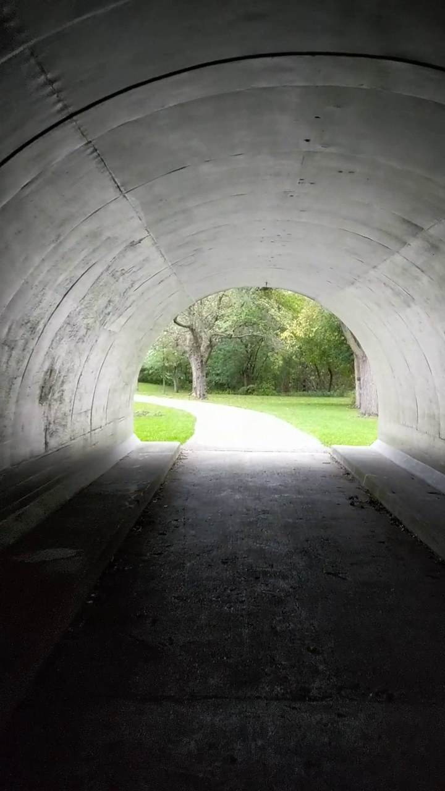
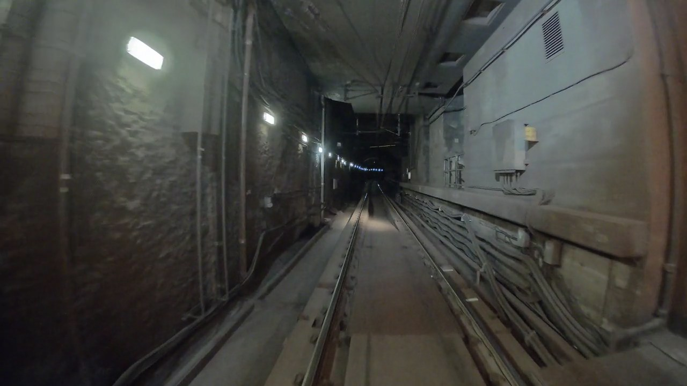
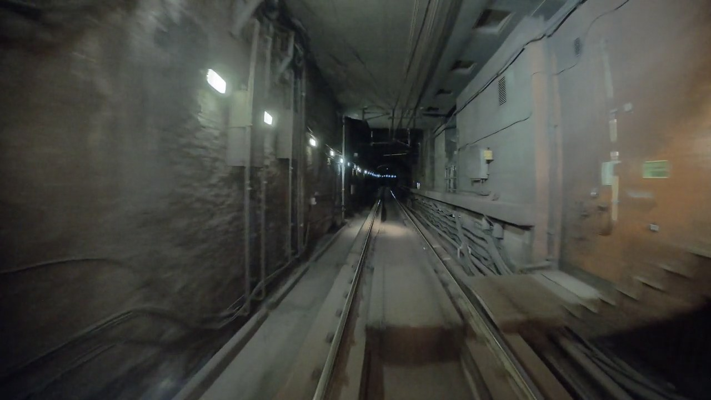
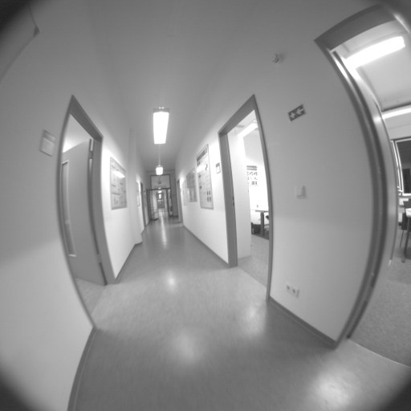
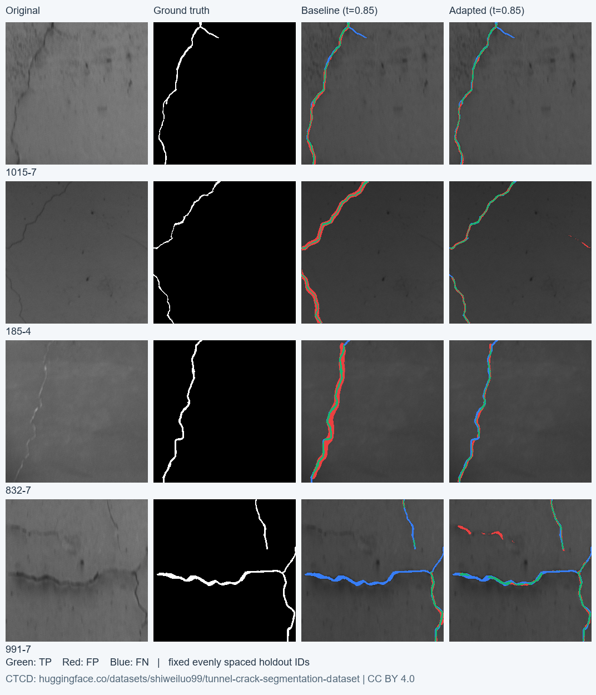

多相机建模与裂缝候选复核
四组真实素材覆盖手持手机、铁路前视与已标定鱼眼走廊。每个页面可切换原始/优化表面、同步相机帧、查看原图掩码，并跳转到关联观测。所有红色标记仍是待人工复核的表面裂缝候选。

DVP 人行隧道 · 手持手机
37/37 帧 · 8,052 稀疏点 · 15,232 面
打开三维与影像复核 →
铁路隧道长片 · 前视相机
56/56 帧 · 6,602 稀疏点 · 15,232 面
打开三维与影像复核 →
铁路隧道短片 · 快速前视
79/79 帧 · 8,062 稀疏点 · 15,232 面
打开三维与影像复核 →
TUM VI 走廊 · 已标定鱼眼相机
179/179 帧 · 4,519 稀疏点 · 15,232 面
打开三维与影像复核 →相机重建实测
| 素材 | 基线注册帧 | 优化注册帧 | 采样预算 | 平均重投影残差 / px | 网格清理（轴向范围收缩 · 填充小孔） |
|---|---|---|---|---|---|
| DVP 人行隧道 · 手持手机 | 40/40 | 37/37 | 2 → 2 Hz | 0.803 → 0.841 | ×2.35 · 填 365 孔 |
| 铁路隧道长片 · 前视相机 | 2/56 | 56/56 | 2 → 2 Hz | 1.083 → 0.403 | ×1.49 · 填 513 孔 |
| 铁路隧道短片 · 快速前视 | 0/27 | 79/79 | 2 → 6 Hz | — → 0.421 | ×1.38 · 填 680 孔 |
| TUM VI 走廊 · 已标定鱼眼相机 | 10/60 | 179/179 | 2 → 6 Hz | 0.840 → 0.340 | ×1.37 · 填 1184 孔 |
铁路短片和鱼眼序列增加了采样帧数，不能把全部收益归于某一算法。同帧数实验、失败尝试与观测支持门槛见完整报告。DVP 的重投影残差略有上升；这些残差都是内部拟合量，不是实测定位精度。单目场景保持相对尺度。鱼眼走廊的低纹理墙面仍有明显缺口，当前结果属于局部观测模型；三维显示使用虚拟透视，右侧保留原始镜头影像。
裂缝分割：42 幅保留图的像素级结果
| 模型 | 阈值 | 精确率 | 召回率 | F1 | IoU |
|---|---|---|---|---|---|
| 原权重 / 原固定阈值 | 0.700 | 0.343 | 0.767 | 0.474 | 0.311 |
| 原权重 / 验证集选阈值 | 0.850 | 0.379 | 0.725 | 0.498 | 0.331 |
| CTCD 域适配 / 验证集选阈值 | 0.850 | 0.680 | 0.748 | 0.712 | 0.553 |
从原 250 幅开发图中排除 30 幅与保留集共享源图编号的切片；176 幅训练、44 幅验证。模型在验证集选定第 35 轮与 0.85 阈值后评估保留集。这 42 幅曾用于探索性预试验；上游预训练数据及物理隧道 ID 也不完整，不能声称完全未接触、隧道独立或预训练独立；也未测量这四段视频的病害识别准确率。

示例固定取保留集排序后的四个等间隔位置，未按得分挑选。绿色为命中，红色为假阳性像素，蓝色为漏检像素。可视化读取已保存的 float16 概率；表中正式指标来自原始评测记录。图像与人工标注来源：shiweiluo99 发布的 CTCD，CC BY 4.0；预测和错误着色由本项目生成。
视频中的候选关联
| 素材 | 候选观测数 | 关联组数 | 含多次观测的组 |
|---|---|---|---|
| DVP 人行隧道 · 手持手机 | 760 | 385 | 155 |
| 铁路隧道长片 · 前视相机 | 1759 | 1069 | 236 |
| 铁路隧道短片 · 快速前视 | 2484 | 1332 | 318 |
| TUM VI 走廊 · 已标定鱼眼相机 | 2259 | 1308 | 242 |
使用标定投影、MVS 深度一致性和最小视差检查邻帧证据；同一帧的不同候选不会合并。遮挡、缺深度和弱视差不计为反证。重复出现的施工缝、涂写也可能形成关联组，因此组数不代表确诊病害数量。
追溯与复现
实验说明与运行命令实测记录原始视频、图像、三维数据和权重保存在本机；仓库发布流程代码与小型实验记录。素材作者、来源和许可见各场景页面。